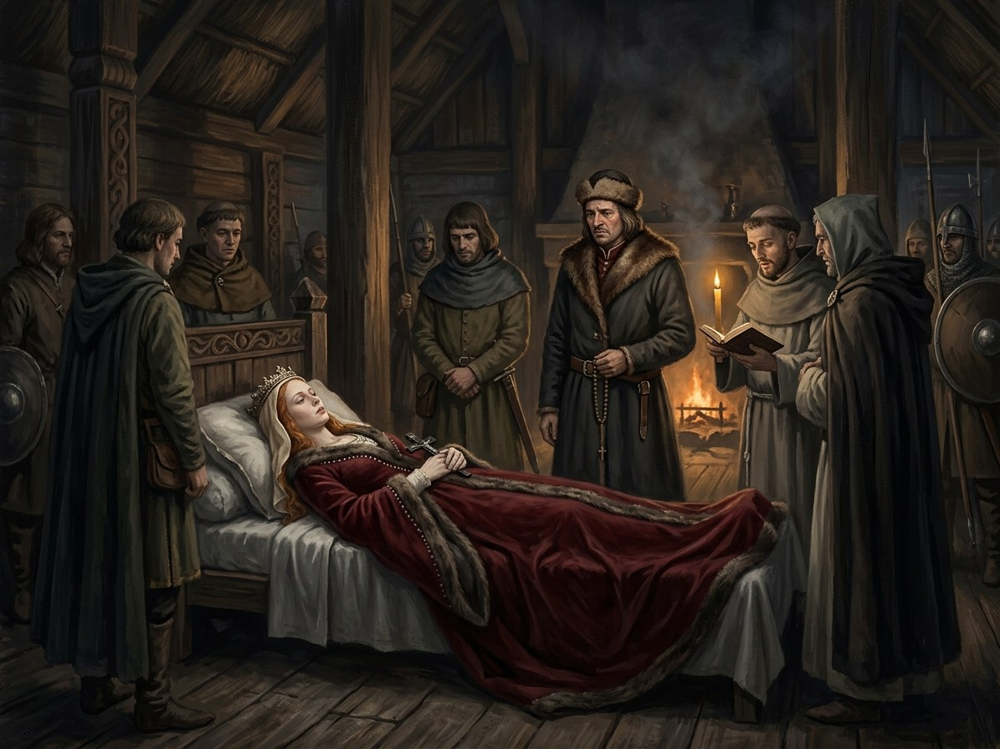

Jadvyga dies¶
Jadvyga dies

Jadvyga dies · event¶
Tipas |
event |
Years |
1399-07-17 |
Status |
Historical record |
Book |
|
Pastaba |
Queen Jadwiga of Poland dies in childbirth on 17 July 1399; the White Silence deepens. |
Where: Kraków (on the map)
What the chronicles say [Historical record]¶
Jadwiga of Poland (crowned „king“ in Kraków on 16 October 1384, married to Jogaila on 18 February 1386) gave birth to a daughter, Elisabeth Bonifacia, on 22 June 1399; the child died on 13 July, and Jadwiga herself on 17 July 1399, aged about 25, of postpartum complications. They were buried together at Wawel on 24 August as her will required; she was canonised in 1997. Her death weakened Jogaila’s claim to the Polish crown, which rested on the marriage: he left for Ruthenia six days after the funeral, the Polish lords renewed their oaths, and he married Anna of Celje on 29 January 1402. See Wikipedia, Jadwiga of Poland. That she warned against the steppe war is in Długosz.
What really happened [The saga’s invention]¶
She is the Relic of the White Silence, a saint by the cold, not by decree: her touch heals and leaves frost. In July there is frost on the sheets. Her body does not decay and her tomb becomes the White Silence’s anchor in the Polish heartland: a tragedy, not a villainy.
Consequences¶
In the saga her tomb frosts in March 1401 when Jogaila prays there, and the White Silence holds Poland while Lithuania’s flames go out.
Dramatisation¶
Book II ch. 21 „Šerkšnas ant Vavelio“ (Jadvyga; 22 June to 17 July 1399, midsummer, Wawel) and Book III ch. 3 (Jogaila at her tomb).
Sąsajos¶
graph LR
ev_jadvyga_dies["Jadvyga dies"]
jadvyga["Jadvyga (Jadwiga)"]
krakow["Kraków"]
ev_jadvyga_dies -->|Location| krakow
jadvyga -->|Took part in| ev_jadvyga_dies
style ev_jadvyga_dies stroke-width:3px